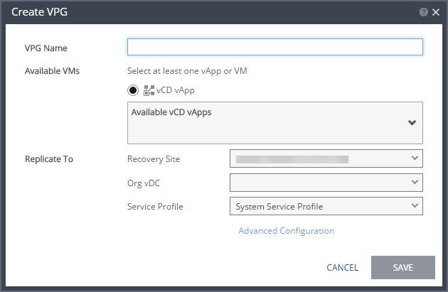
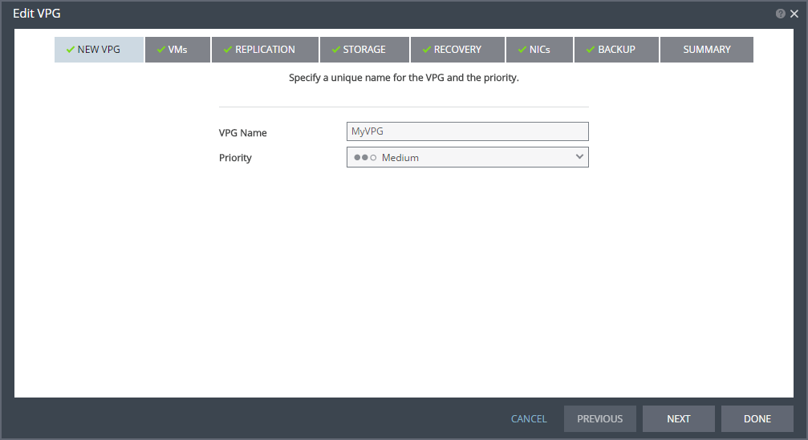
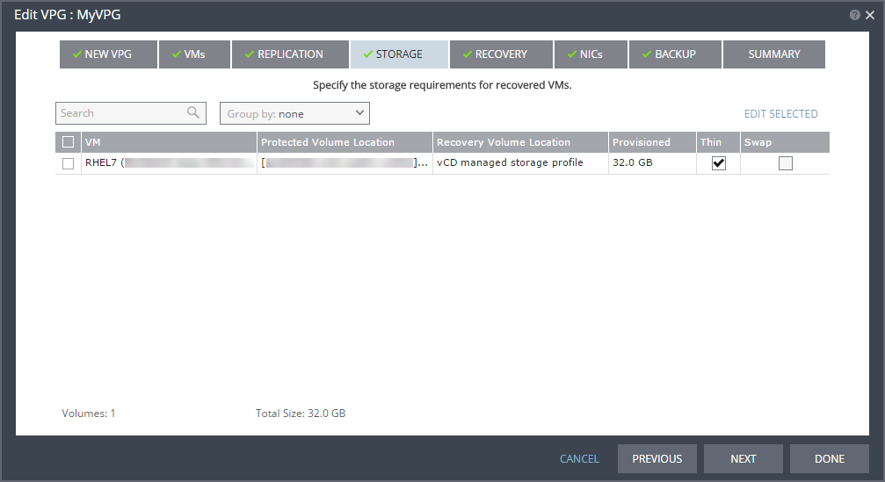
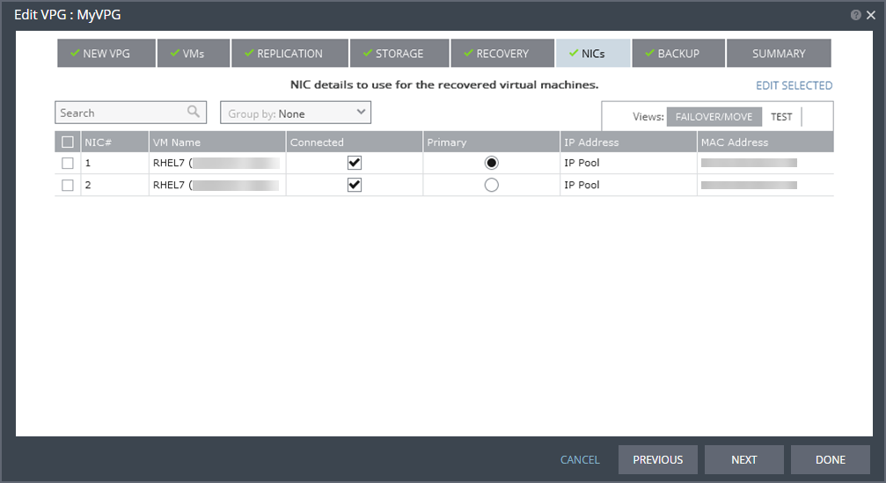

How to create a virtual protection group
Overview
A virtual protection group (VPG) is a collection of virtual machines (VMs) that are grouped together for some purpose, for example data protection, disaster recovery or workload migration. When you create a VPG, a replica virtual disk is created on the target site (for recovery or migration) for each VM in the VPG. These replica disks are then populated with the data in the source VMs by synchronising the VMs with the target site replicas.
After the initial synchronisation completes, any writes to disk from the VMs in the source site are sent to the target site. These writes are stored in the target site in journals.
Intended audience
This guide is intended for users who are:
Setting up Disaster Recovery as a Service
Setting up Journaling Protection
Migrating workloads onto the UKCloud platform
For Journaling Protection, you must have access to the Zerto Self-Service Portal in the UKCloud zone in which the VMs that you want to protect are located.
For Disaster Recovery as a Service or Migration to the Cloud, you must have access to the Zerto Virtual Manager Web Client in the local environment in which the VMs that you want to protect or migrate are located.
Creating a virtual protection group in the Zerto Self-Service Portal (Journaling Protection)
If you're creating a VPG for Journaling Protection, you specify the vApp to protect and all the VMs in that vApp are included in the VPG.
Log in to the ZSSP.
For more detailed instructions, see How to access the Zerto Self-Service Portal.
Use the ZSSP login link for the zone in which the VMs that you want to protect are located.
Select the VPGs tab and then click NEW VPG.

In the Create VPG dialog, specify the VPG Name.
The name must be unique and contain no more than 80 characters.
From the Available VMs list, select the vApp that contains the VMs that you want to protect.
From the Recovery Site list, choose your target site.
From the Org vDC list, choose the VDC in which you want to replicate the VMs.
UKCloud provides a single Service Profile: System Service Profile.

Click SAVE.
At this point, the selected VMs are synchronised to the target site. This synchronisation between the source site and target site may take some time, depending on the size of the VMs.
After the initial synchronisation, all the VMs in the VPG are fully protected and all write operations to those VMs are sent to the journal.
After the initial creation of your VPG, you need to edit it to determine what happens during disaster recovery.
On the VPGs tab, click the pencil icon next to your VPG Name.

From the Priority list, choose the priority of transferring data from the source site to the target site for this VPG when there is limited bandwidth and more than one VPG is defined on the source site.
High - Updates from VPGs with high priority are passed over the WAN first
Medium - Updates from VPGs with medium priority use whatever bandwidth is left after the high priority VPGs have used it
Low - Updates from VPGs with low priority use whatever bandwidth is left after the medium VPGs have used it

Click NEXT.
In the VMs page, you can see the VMs that are included in the VPG.

Click NEXT.
In the REPLICATION page, you can see the options you selected for the Recovery Site and Recovery Org vDC.

To change the Storage Profile used for the VMs in the VPG, click VM SETTINGS.
You cannot change the Journal Size or Journal Warning Threshold.
Click OK when you're done.

Click NEXT.
The STORAGE page displays the storage used for the VM data (by default, this is the same storage as that used for the VM definition).

If you want to edit the storage settings for a VM, select the VM and then click EDIT SELECTED.
Note
Make sure that the Thin checkbox is selected for all VMs.
When you've finished setting the options for each of the VMs, click NEXT.
In the RECOVERY page, from the Failover/Move Network list, choose the network to use in the target site for a live failover.
From the Failover Test Network list, choose the network to use in the target site for a test failover of VMs.
If you select Isolated, the network interface controller (NIC) will not be connected to the VM when it's brought up in the target site.
vCD Guest Customization controls whether the failed‑over VM is subject to guest customization to set its IP address inside its operating system.

Click NEXT.
In the NICs page, specify the network interface controller (NIC) to use for the VMs after a live or test failover.
Note
If you specify different IP addresses (or use IP Pool) for the IP addresses here, you must enable vCD Guest Customization on the RECOVERY page.

Click NEXT.
The System Service Profile does not permit Backup Services, so click NEXT again.
In the SUMMARY page, review the options you have selected for the VPG and click DONE to create the VPG.
Creating a virtual protection group in Zerto Virtual Manager (Disaster Recovery as a Service and Migration to the Cloud)
If you're creating a VPG for Disaster Recovery as a Service or Migration to the Cloud, use the ZVM Web Client in your local environment. When you create the VPG, you specify the individual VMs that you want to protect or migrate.
Log in to the ZVM Web Client.
Select the VPGs tab and then click NEW VPG.
On the NEW VPG page of the Create VPG dialog, specify the VPG Name.
From the Priority list, choose the priority of transferring data from the source site to the target site for this VPG when there is limited bandwidth and more than one VPG is defined on the source site.
High - Updates from VPGs with high priority are passed over the WAN first
Medium - Updates from VPGs with medium priority use whatever bandwidth is left after the high priority VPGs have used it
Low - Updates from VPGs with low priority use whatever bandwidth is left after the medium VPGs have used it
Click NEXT.
On the VMs page, select the VMs that you want to protect or migrate and then click NEXT.
On the REPLICATION tab, from the Recovery Site list, choose your UKCloud target site.
From the Recovery Org vDC list, choose the VDC in which you want to replicate the VMs.
UKCloud provides a single Service Profile: System Service Profile.
Click NEXT.
The STORAGE page displays the storage used for the VM data (by default, this is the same storage as that used for the VM definition).
To change the Storage Profile used for the VMs in the VPG, click VM SETTINGS.
If you want to edit the storage settings for a VM, select the VM and then click EDIT SELECTED.
Note
Make sure that the Thin checkbox is selected for all VMs.
When you've finished setting the options for each of the VMs, click NEXT.
In the RECOVERY page, from the Failover/Move Network list, choose the network to use in the target site for a live failover or move operation.
From the Failover Test Network list, choose the network to use in the target site for a test failover of VMs.
Click NEXT.
In the NICs page, specify the network interface controller (NIC) to use for the VMs after a live or test failover, or a move operation.
Note
If you encounter issues with MAC addresses, edit each VM and set the MAC Address to Reset for both the Failover/Move and Test networks to assign a new address on failover or move.
At this point, you can click DONE to create the VPG.
Next steps
For Disaster Recovery as a Service and Journaling Protection, we recommend that you run a test failover to verify that, in the case of an actual disaster, your VMs can be recovered successfully. For information about how to do this, as well as how to perform an actual failover, see How to perform a failover.
For Migration to the Cloud, you can now migrate your selected VMs to the UKCloud platform. For more information, see How to migrate your workloads to the UKCloud platform.
Feedback
If you find an issue with this article, click Improve this Doc to suggest a change. If you have an idea for how we could improve any of our services, visit the Ideas section of the UKCloud Community.